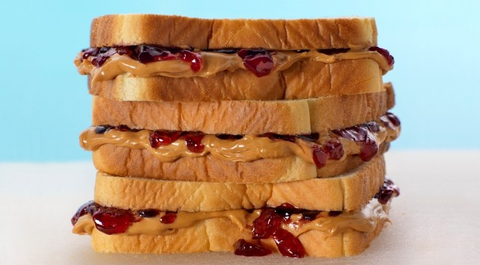

Peanut Butter & Jam

Image source: https://mobile-cuisine.com/did-you-know/peanut-butter-jelly-sandwich-fun-facts/
Description
This is the reason that sliced bread was invented. It's 3 simple ingredients, so you have NO EXCUSE not to try it!
Plus, it's one of the cheapest meals/snacks to make.
Enjoy this creamy, rich, fruity, sweet combination nestled comfortably between two slices of manufactured, bleached bread.
Ingredients
- 2 TBSP Peanut Butter (Preferrably Natural)
- 2 TBSP Your favorite Jam (Preferrably your grandma's recipe)
- 2 slices of your favorite bread
Steps
- Pull out the bread and place them on a plat
- Add the peanut butter to one slice of bread with a butter knife
- Add the jam to the other slice of bread
HINT: I like to use a spoon to spread the jam. Plus it makes it easier to get the jam from the jar
- Take your two pieces and slap 'em together
- For best presentation: slice the sandwich from the top left corner down through the bottom right corner. You should be left with two triangles
Back to Main Page